Introduction
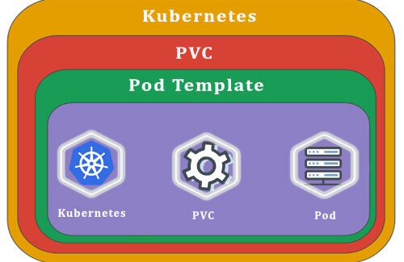
Why we need Volume in Kubernetes
Here, to give you a good idea of what a Persistent volume claim (PVC) is, I want to explain to you first what a volume is and why we need a volume at all with Postgres in particular.
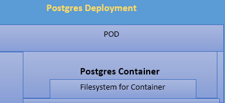
-
Now, look at the above image. We have the deployment which creates a Pod and inside that pod, we have a single Postgres container and inside that container is a file system i.e. totally isolated to just be accessible by the container itself. As you know Postgres is a database and this db is very similar to many other types of dbs. Postgres takes in some amount of data and writes it to a file system. So, we can imagine that a request to write some data or save some data with Postgres comes into the container. PostgreSQL is going to process it and eventually stores the information into a file system. So, inside that container, we can imagine that there is a file system and some amount of data is being stored on it.
-
Here is the thing to keep in mind about any file system that is created or maintained inside of a container. If we ever had a situation where for any reason you can imagine the Postgres container with a Pod wrapping it and managing it crashes, then everything over there gets 100 percent lost including the file system that exists inside of the Postgres container.
-
So, if we just use our copy of Postgres as a single deployment with the Pods inside of it and no associated volumes and if just write data to Postgres and then if that container eventually crashes then that entire pod is going to be deleted by the deployment. And a new pod is going to be created in its place and this new pod is going to have no carryover of data or no previous data. So, none of the data on the file system of the Original container gets brought over to the new container or the Pod that wraps it. So, at the instant that the deployment starts up a new pod, then we lose all of the data that are present inside of the postgres database.
-
We never want to experience any type of data loss with any database such as Postgres. This is the issue now what I discussed. If just let Postgres save all of its data inside the file system maintained by the container, we are going to lose it as soon as the Pod crashes. Please see the below image to understand more:
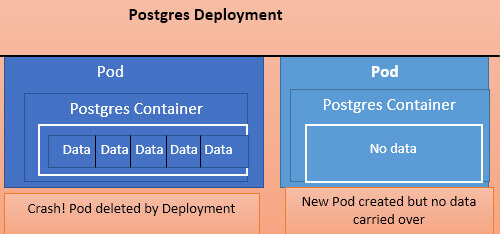
-
So, now I will explain how we can solve this problem of data loss when the Pod crashes. The solution to this problem is “Volume”.
-
We can make use of volumes to have a consistent file system that can be accessed by the database Postgres and now we can imagine that with a volume in place i.e. running on a host machine, if we have to write data that comes into the container, then Postgres will think that it is going to writing it to a file system that exists inside the container but in reality, it is going to be a “volume” that actually exists outside on the host machine.
-
We can make use of volumes to have a consistent file system that can be accessed by the database Postgres and now we can imagine that with a volume in place i.e. running on a host machine, if we have to write data that comes into the container, then Postgres will think that it is going to writing it to a file system that exists inside the container but in reality, it is going to be a “volume” that actually exists outside on the host machine.
-
The result of this is that if our original pod or the Postgres Container inside of it crashes for any reason, the deployment is going to delete that thing and will create a new pod with a new copy of Postgres inside of it. But we are going to make sure the new copy of Postgres that gets created gets access to the exact same volume and so it will have access to all of the data that had been written by the previous copy of Postgres that already existed. Please refer the below diagram for clear understanding:
- That is why we use volumes, and this is how we are going to allow ourselves to save data with the database but will not have to worry about all the data inside there being deleted anytime that the container has to be restarted or crashes. Suppose in your deployment yaml configuration file, if you would have set “replicas: 2”, then we would end up with a situation where we will have two pods that will be accessing the same volume.
- Having two different databases access the same file system without them being aware of each will be a disaster and will create problems. So, at no point in time, you are ever going to increment the replicas to two or more. So, here you are not able to scale up. For any reason, if you want to scale up your copy of Postgres and make it more available, then you have to go through some additional configuration steps besides just incrementing the number of the replicas.
Kubernetes Volumes Internals
I will explain how we can use volume in the way of persisting data outside of a container so that the data will be persisted across restarts or termination of a given container. Now, I will elaborate on volumes in the world of Kubernetes.
“Volume” in Kubernetes is a reference to a very particular type of object. A Deployment is an object, or a Java Software Development service is an object. So, in the world of Kubernetes, we can write a configuration file that will create something called a “volume”. In Kubernetes, that object is something that allows a container to store some persistent data at the Pod level. In addition to the use of volumes, we also have access to two other types of data storage mechanisms that are “Persistent Volume” and “Persistent Volume claim”.
Note: Volume is very different than a persistent volume and persistent volume claim.
Limitations of Volumes in Kubernetes
But one problem here. The volume is tied to the pod. So, if the pod itself ever dies then the volume dies and goes away as well. So, a volume in Kubernetes will survive container restarts inside of a pod. So, now you got to know that in the world of Kubernetes, a volume is not really appropriate for storing data for a database. It definitely can work in the sense that the container can restart but we are still kind of vulnerable to anything goes wrong at the pod level itself.
Volume vs Persistent Volume(PV)
The other types of objects present in Kubernetes are Persistent Volume claim and persistent volume. I have created a diagram to specify the differences between the PVC and PV.
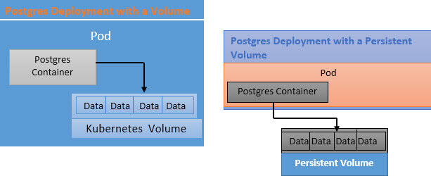
- So, in the above diagram, on the left-hand side, we have a Postgres deployment with a volume that already I have explained. Now notice the right-hand side image above, with a persistent volume (PV), we are creating some type of long durable storage that is not tied to any specific Pod or any specific container. So, you can imagine that a PV is outside the pod and completely separate from the pod. If the container crashes for any reason or if it needs to be created or recreated for any reason, then the old container will get died and the new one can connect to that PV that exists outside of that Pod.
- Now let’s consider the other case where the Pod gets deleted or recreated or get crashed due to any reason, then the old Pod completely disappears but the PV will stick around and when the new Pod gets created with a new copy of Postgres then that container is going to be able to connect to that PV that exists outside of that Pod. So, this is a big and noticeable difference between a normal volume and a persistent volume.
- So, here I am talking about the life cycle of the volume itself. With a normal volume, it is tied to the life cycle of the Pod but with a PV, it is going to last for all the time or else until we as administrator manually delete. With a PV, we can recreate a container or Pod with no issues. The volume will still be going to stick around with all the data that we expect to have.
Read more - The Importance of Kubernetes in DevOps
Persistent Volume(PV) vs Persistent Volume Claim(PVC)
- So, here I am going to give you a very quick analogy to help you understand the differences between a PV and PVC. So, let’s imagine that we are putting together a pod configuration. So, when we put a Pod, we know that it is going to need a persistent volume. And think of a system that is going to advertise a couple of different storage options. So different storage options that are being advertised are what we refer to PVC. So, PVC is an advertisement and it is not an actual volume. It cannot store anything. It is just an advertisement that says here are the different options that we will have access to for storage inside of a particular cluster.
- So, we are going to write out inside of some config files the different persistent volume claims that are going to be available inside of our cluster. Now, we have to write a config file that says that there should be a 500 GB hard drive option available to all the different parts inside of our cluster. Also, we have to write out a config file that says there is a 1TB option i.e. available as well. Theoretically, a PVC is like an advertisement that there is something you can avail of for our pod when it is created.
- Now, when you chose one of those persistent volumes, then you went to the Kubernetes with your pod config and you said to Kubernetes (which is the salesperson in reality) to avail that 500GB option. So, here Kubernetes has to go back into some imaginary store and has to look through some number of options of PVs that are readily available.
- So, inside of a Kubernetes cluster, we might have some number of PVs that have already been created. These are instances of hard drives actually that can be used right away for storage. Any PV i.e. created ahead of time inside our cluster is referred to as statically provision. A statically Provisioned persistent volume is something that we have specifically created ahead of time.
- We have another option also available that PV can be created on the fly. So, this PV is called dynamically Provisioned persistent volume. It is another storage option that is not created ahead of time, but it is only created when we put into our pod and ask for it.
Summary PVC: So, finally to summarize what a PVC is: PVC is an advertisement of options and we can ask for one of those options inside of our Pod config and handle it to Kubernetes. So, Kubernetes will at its existing stores of Persistent volume, and it will give us the volume that has already been created or it will create a new one on the fly dynamically.
PVC Demo
Persistent Volume Claim Configuration File Overview:
I am going to write out a PVC config file. This is going to advertise possible storage options that can be attached to a Pod config. So, I am going to create a YAML file here named “database-persistent-volume-claim-yaml” file.
database-persistent-volume-claim-yaml file:
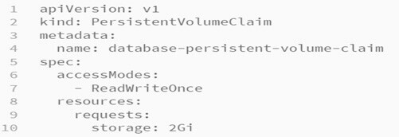
Explanation:
“kubectl describe storageclass”
So, when you execute the above command it gives the below output:
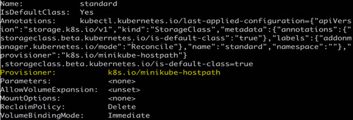
- The output tells us in a very broad term. We have a provisioner here i.e. “minikube-hostpath”. This means that when we ask Kubernetes to create this PV, then it is going to look on the host machine to minikube and it is going to make a little slice of our hard drive space. Things get more complicated when we move our cluster from our computer to a cloud environment.
-
So, when we are working with a cloud provider, we get many numbers of different options where some hard drive space or file system space can be sourced from. In a cloud or Production environment, if we create PVC config for 1GB of space, then Kubernetes will have many options available because every cloud provider like Azure or Google cloud provides different solutions for storing information. We have to tell Kubernetes which of the below options we want to use:
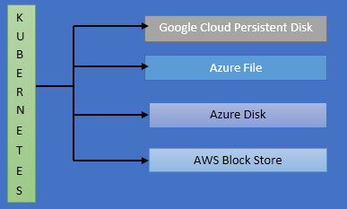
- So, if we are hosting our application on Google cloud, the google cloud service called “ Persistent Disk” is going to be used to store information with our persistent volume. If our app is on Microsoft Azure, then we can use Azure file or Azure Disk to store information with our PV. For AWS, we have AWS block store. So, like these many options available in a cloud env.
- But in our case, we are setting up the PVC in our local environment only without designating a storage class name. We did not specify that option because we are relying upon the Kubernetes’s default. So, this storageClassName option is available where we can customize Kubernetes is going to look to create the file system to allocate to our Pod.
Designating a PVC in a Pod Template
Now, I am going to create our Postgres deployment file as below:
postgres-deployment-yaml:
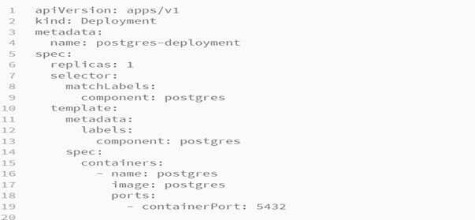
Please look at the “template” section of the above fie. This template is used for every pod i.e. created by this deployment. As “replicas” value I have set to 1, so there will always be one pod at a time. Now I am going to update the template section and will inform this pod that when it is created, it needs to request some type of long-term storage this is nothing but a persistent volume that meets all the requirements that are advertised by PVC configured in our database-persistent-volume-claim.yaml file.
Now, inside the “spec” section of our postgres-deployment-yaml file, I am going to add a new key-value pair. I will put “volumes” of name “postgres-storage” and in the persistentVolumeClaim section, I will give the name of our PVC file.
Now our updated postgres-deployment-yaml file will look like as below:
Updated “postgres-deployment-yaml” file with Volumes configured:
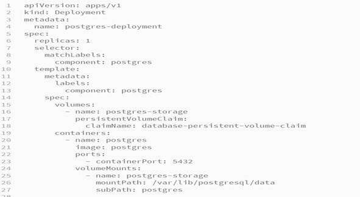
Explanation:
- So, the volumes that we configured in our above configuration file sets up the request on the Pod to reach out to Kubernetes and asks for storage (that has ReadWriteOnce access mode and 2GB memory) that meets all the requirements that are laid out inside of our “database-persistent-volume-claim” object.
- The volumes in the yaml config file are just to allocate the storage either in the local computer or if it is a production environment then storage will be allocated by the cloud provider. So, once we allocate that storage, then we need to actually assign it for use by all the different containers that are in use by our Pod. So, in addition to the “Volumes” section, I have also added some config to our container section as well.
- Now please look at the “Containers” section in the above image. I have added “volumeMounts” which clarifies that after accessing the storage, now how to use that storage inside of the container. Notice that volume name and volume mount name are identical i.e. “postgres-storage” in our file. So, when we put the same name in the volumeMount, that means the particular storage that we have asked Kubernetes for in “volumes” entry section of our file, this piece of storage is going to be used for this particular volumeMount and hence the names are identical.
- Then the next part is “mountPath”. This “mountPath” is designating where inside the container this storage should be made available. So, I have given the folder reference there and anything that the container stores at this folder inside the provided directory will be actually stored inside of our volume. This is very similar to the docker volume. So, in the mount path, I have designated the data directory that postgres uses for storing data on the hard drive. This is the actual data that we want to back up.
- The nonpayment storage area for postgres is “/var/lib/postgresql/data”. This path I have given in the mountPath field. Another part is “subPath”. “subPath” choice means that any data inside the container that is collected center of the mount path is going to be stored inside of a folder called “postgres” inside of the actual Persistent volume claim. So, if we ran our application for few minutes and save some data to our Postgres database and then eventually open up our persistent volume, then we would see that all the data that were saved to “/var/lib/postgresql/data” folder is nested inside of a folder called “postgres” inside Persistent volume.
Note: I have given example here very specific to “PostgreSQL” database.
Applying a PVC:
-
Now, I am going to apply our configuration to a local cluster. So, I have put my two configuration files (postgres-deployment-yaml and database-persistent-volume-claim ) in a directory called k8s and now I am going to execute the below command:
-
Here k8s is my directory name where I have placed all the required config files and directly executed the apply command on the folder only. The below output I will be getting:
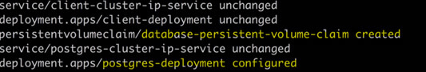
- Please see the above output, it says that database-persistent-volume-claim is created, and our postgres-deployment is configured. Now, let’s see the status of our deployment and all of its pods. For getting the pod status, please execute command “kubectl get pods”.
-
Now, I am going to list out the different persistent volumes that have been created inside of our application. So, I am going to execute the below command:
-
Here “pv” stands for persistent volume. Now output we will get is as below:
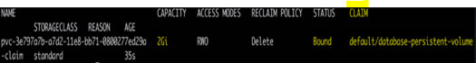
-
On the right-hand side of the on a high result, you can understand the “CLAIM” i.e. using our “database-persistent-volume” claim that we have configured and status of that is bound which means that currently, it is in use. Now, to list out all the PVC, I am going to execute the below command:
-
This command will list out all the different claims that we have created. The output we will get as below:
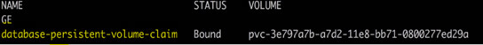
- Remember the claim name on the above output image is just an advertisement. In simple words, it is just saying that if we want, we can get. So, the persistent volume is an actual instance of storage that meets all the requirements that are laid out by the Persistent volume claim that we made.
- If you want to delete the persistent volume claim or persistent volume, then you can clean up these volumes using the below command:
“kubectl delete pvc database-persistent-volume-claim”
“kubectl delete pv your Persistent Volume Name”
Summary: So, here if we write any data to Postgress db and then for some reason kill that pod then ideally it will not wipe out any other data that had been stored inside the database. So, you can test this yourself by saving any data to Postgres.
Conclusion:
Here in this article, you learned the internals of Kubernetes persistent volume claim and persistent volume. Also, this blog explained to you about the need for volumes in Kubernetes and demo on how to create and designate the PVC configuration files in Pod template through an example of Postgres deployment.
Reference:
 Fill the details and We’ll get back to you soon
Fill the details and We’ll get back to you soon